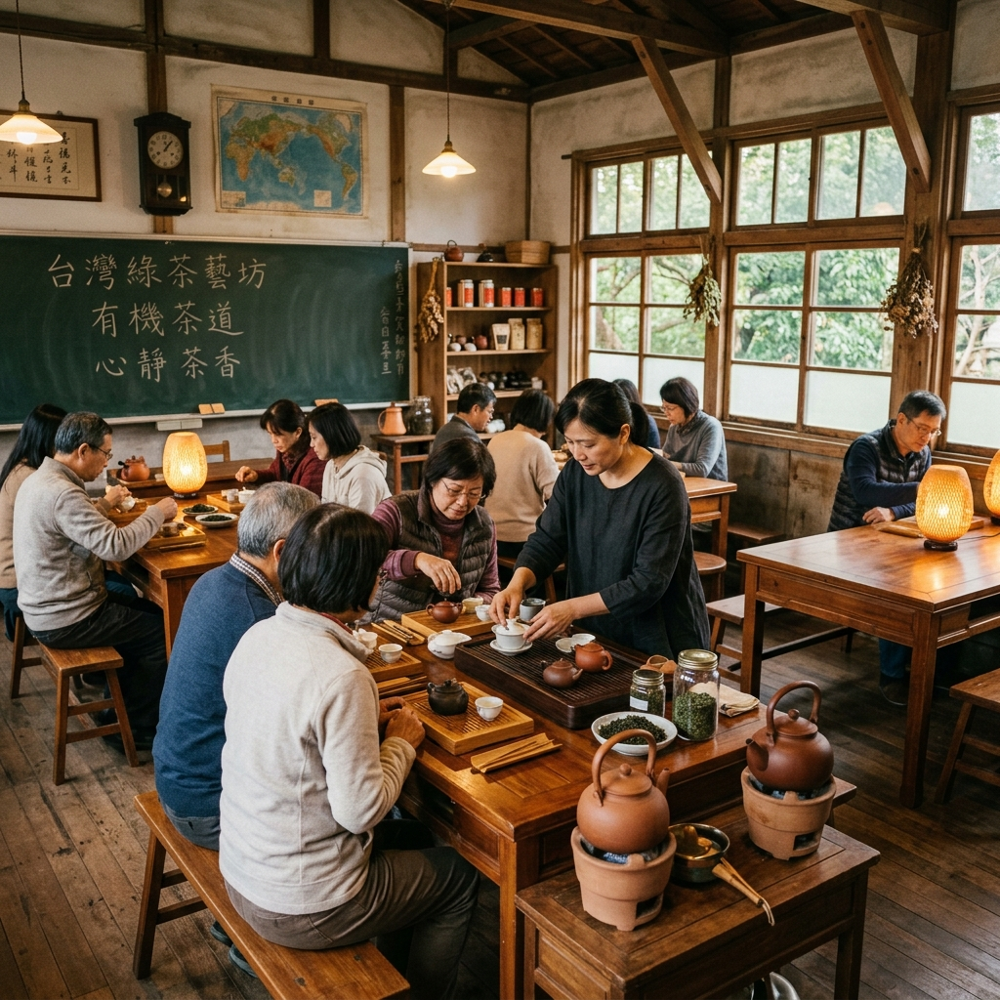
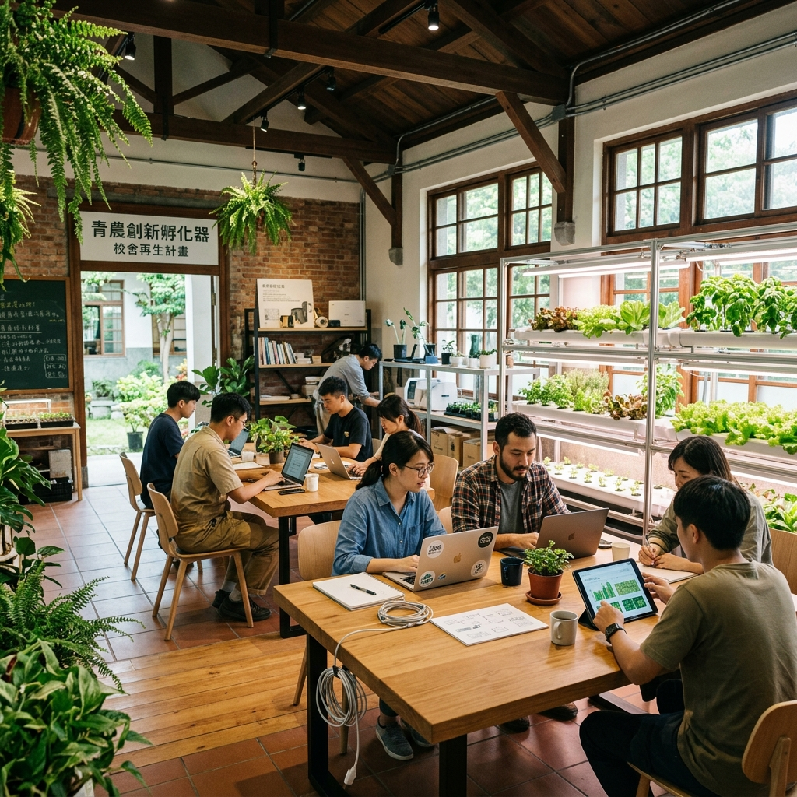
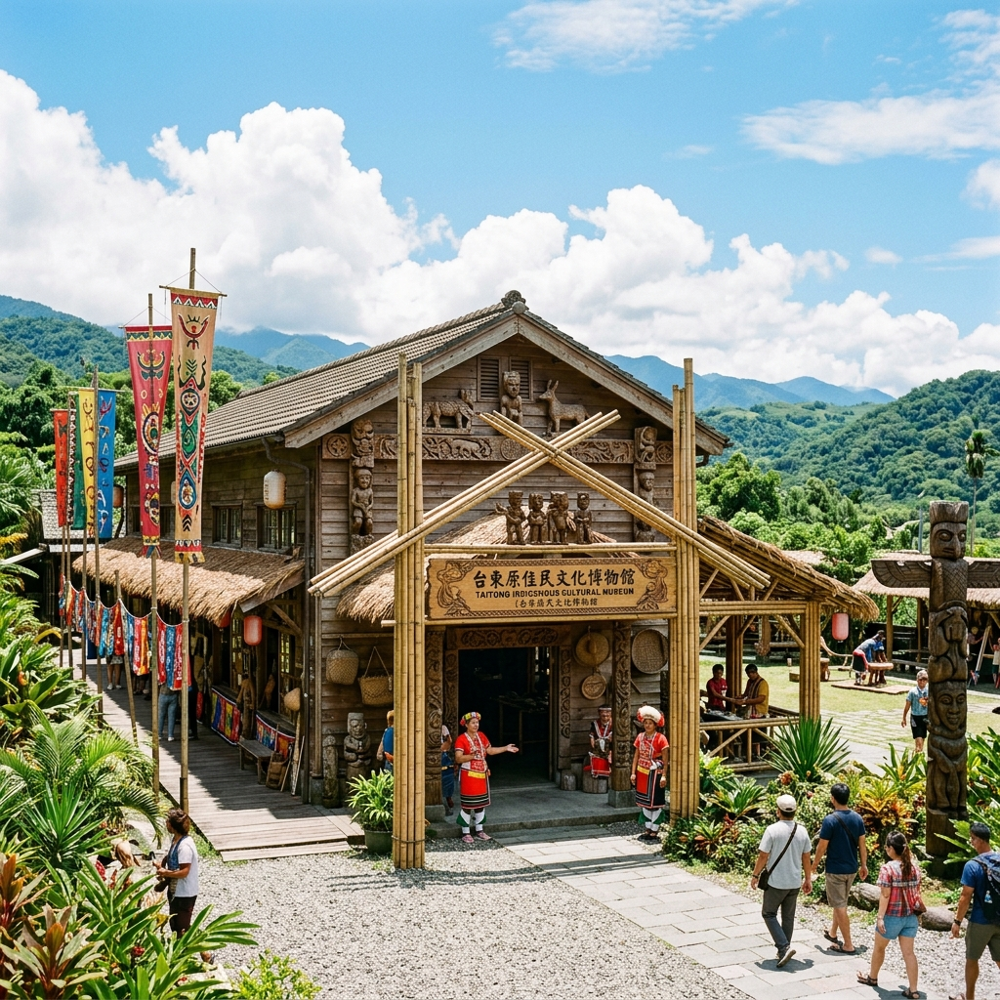

課堂的木黑板落滿粉筆灰，走廊的鐵銅鐘再未被敲響。 這並非終點，而是另一場守護的開始。我們將透過空間轉型、老幼共融、科技農業與藝術活化，帶您探索這場無聲卻深刻的空間革命。
少子化海嘯對台灣的重塑是全面性的。民國 115 年全台國小生總數預估將滑落至歷史新低。在過去十年間，全台已有 118 所偏鄉與都市小學默默停辦或與他校合併，成為一座座寂靜的都市或偏鄉空島。
廢校後留下的廣大空間是地方沈重的負擔，還是重啟生機的資產？以往，許多廢校因為「非都市土地變更」及法規繁複，只能鎖上鐵門，淪為野草叢生、居民走避的蚊子館。這不僅是地方活力的流失，更是龐大公有資產的空轉。
但在某些角落，改變正在悄悄發生。透過地方創生與空間活化，昔日盛滿孩童喧譁聲的教室，被打掉隔牆，擺上了沙發、輔具、多功能廚房，華麗轉身為高齡日照沙龍或智慧農業培訓站。我們記錄下 these 空間在世代交替中的華麗轉身。
輸入你的資訊，看看少子化在你的生命歷程中留下了什麼軌跡
這些校園曾是無數偏鄉孩童的遊樂場，在時間淘洗後，它們並未被廢棄，而是以全新姿態再次守護社區。點選卡片即可翻轉查看空間變革檔案。

原分校於停辦後多年閒置，操場荒廢。如今華麗改造成融入在地有機茶業、環境美學教育的永續探索基地。週末提供市民品茶與親子森林導覽，重新串起人與自然。

停辦後的校舍由地方政府與青創團隊攜手，打造為智慧農創孵化器。引進無人機噴灑培訓課程與在地農特產品直鋪平台，成為屏北地區吸引青年返鄉創業的最大綠洲。

分校停辦後，為避免原民部落文化流失，校地被保留並改裝為原民竹砲、釀酒工坊與戶外實境劇場。將土地歷史與阿美族傳統記憶深刻融合，轉化為深度觀光資產。
同一個空間的褪色與重生，在不同人眼中有著截然不同的溫度。點選下方角色，聆聽他們心底的聲音。
「以前下課鐘一響，我們都往那棵大榕樹衝，看誰先爬上去。併校後，新學校好大好漂亮，可是上學要坐半小時客運，回到家大門鎖著，再也沒有人在圍牆邊大喊我的名字了...」
拉動滑杆，親眼見證一間廢棄的偏鄉國小自然教室，如何透過微型空間改造工程，重新成為溫暖的老幼共融日照沙龍。
下方整合了真實地圖，我們收錄了全台經典的廢校轉型代表，點擊發光圖標即可即時調閱該點位的空間重構檔案與現狀導覽。
地圖底圖：© OpenStreetMap contributors, CartoDB Positron
原屏東縣廣興國小關福分校。停辦後改造為青年農創孵化器，結合無人機飛行培訓與在地小農直鋪，重塑偏鄉產業鏈。
你被委任為偏鄉大武鎮的鎮長。鎮上的「大武國小大溪分校」今年因為只有1名新生，正式面臨裁併。 你面臨著 1,500 萬的轉型撥款，必須在民意衝突、永續預算與法規限制下做出關鍵抉擇。
學校有一棟歷史50年的舊紅磚危樓禮堂，結構有安全隱憂。地方老一輩強烈抗議拆除，要求保留共同記憶；而專家評估補強需要極高費用。你會如何決定？
這是一座由停辦小學普通教室改造的「科技生態與農業培訓室」藍圖，點擊圖紙中發光的熱點針腳（Hotspots），即可查看細部的功能重構與科技導入。
我們將為您詳細解說空間再造時所導入的現代功能構造。
下方區域為互動式360度虛擬實景教室繪圖。用滑鼠點擊並水平按住、或用手指在手機螢幕上左右拖曳，即可在舊校舍中自由漫步。
如同 NASA 追蹤大氣二氧化碳濃度的陡升趨勢，全台灣自 1990 年起的生源與廢併校數消長曲線，同樣呈現驚心動魄的交叉走勢。
出生人口急劇下滑：從 1990 年的年產 32 萬新生兒，降至當前的歷史谷底，且斜率仍在加劇。
廢校累積陡增：隨著學區瓦解，偏鄉閒置公有校舍累積總數呈等比級數攀升，空間活化成為刻不容緩的國家級命題。
你知道偏鄉學校停辦後，如何變更土地嗎？還是對日照場景法規有所不解？透過這 4 道模擬里長挑戰題，測測你的公共政策洞察力！
您的政策洞察力得分是：0 / 100 分